토목산업기사 (2016-10-01 기출문제)
1과목: 응용역학
1. 그림과 같은 라멘에서 하중 4tf 를 받는 C점의 휨모멘트는?
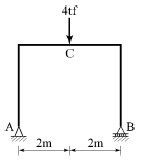
- 3tf⋅m
- 4tf⋅m
- 5tf⋅m
- 6tf⋅m
(정답률: 81%)

2. 다음 중 처짐을 구하는 방법과 가장 관계가 먼 것은?(오류 신고가 접수된 문제입니다. 반드시 정답과 해설을 확인하시기 바랍니다.)
- 3연모멘트법
- 탄성하중법
- 모멘트면적법
- 탄성곡선의 미분방정식 이용법
(정답률: 23%)
3. 그림과 같은 10m의 단순보에서 최대 휨응력은?
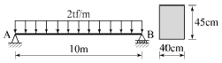
- 180.19kgf/cm2
- 185.19kgf/cm2
- 190.19kgf/cm2
- 195.19kgf/cm2
(정답률: 70%)
4. 트러스 해석 시 가정을 설명한 것 중 틀린 것은?
- 하중으로 인한 트러스의 변형을 고려하여 부재력을 산출한다.
- 하중과 반력은 모두 트러스의 격점에만 작용한다.
- 부재의 도심축은 직선이며 연결핀의 중심을 지난다.
- 부재들은 양단에서 마찰이 없는 핀으로 연결되어진다
(정답률: 52%)
5. 다음 그림과 같은 봉(棒)이 천장에 매달려 B, C, D점에서 하중을 받고 있다. 전구간의 축강도 EA가 일정할 때 같은 하중 하에서 BC구간이 늘어나는 길이는?
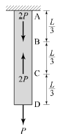
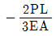
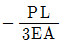
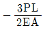
- 0
(정답률: 45%)
6. 그림과 같이 지름 2R인 원형 단면의 단주에서 핵지름 k의 값은?
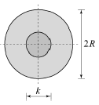
- R/4
- R/3
- R/2
- R
(정답률: 60%)
7. 지름 0.2cm, 길이 1m의 강선이 100kgf 의 하중을 받을 때 늘어난 길이는 얼마인가? (단, E=2.0×106kg/cm2)
- 0.04cm
- 0.08cm
- 0.12cm
- 0.16cm
(정답률: 63%)
8. 반지름이 2cm인 원형 단면의 도심을 지나는 축에 대한 단면 2차 모멘트를 구하면?(오류 신고가 접수된 문제입니다. 반드시 정답과 해설을 확인하시기 바랍니다.)
- π ㎝4
- 4π ㎝4
- 16π ㎝4
- 64π ㎝4
(정답률: 55%)
9. 그림과 같은 단면에서 도심의 위치
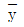
로 옳은 것은?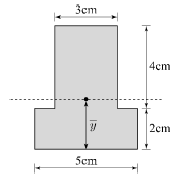
- 2.21cm
- 2.64cm
- 2.96cm
- 3.21cm
(정답률: 69%)
10. 연행하중이 절대최대휨모멘트가 생기는 위치에 왔을 때, 지점 A에서 하중 1tf까지의 거리 (x)는?
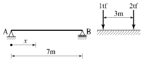
- 1m
- 0.8m
- 0.5m
- 0.2m
(정답률: 55%)
11. 그림과 같은 단순보에 발생하는 최대 처짐은?
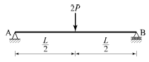
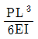
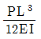
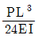
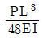
(정답률: 54%)
12. 폭이 20cm, 높이가 30cm인 단면의 보에 4tf 의 전단력이 작용할 때 이 단면에 일어나는 최대 전단응력은?
- 4kgf/cm2
- 6kgf/cm2
- 8kgf/cm2
- 10kgf/cm2
(정답률: 60%)
13. 그림과 같은 구조물의 부정정 차수는?
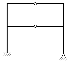
- 2차
- 3차
- 4차
- 5차
(정답률: 51%)
14. 다음 그림과 같이 한 점에 작용하는 세 힘의 합력의 크기는?
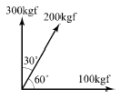
- 374.2kgf
- 426.4kgf
- 513.7kgf
- 597.4kgf
(정답률: 62%)
15. 다음 그림의 캔틸레버보에서 A점의 휨모멘트는?
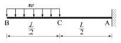
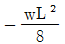
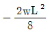
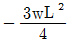
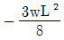
(정답률: 64%)
16. 바리뇽(Varignon)의 정리에 대한 설명으로 옳은 것은?
- 여러 힘의 한 점에 대한 모멘트의 합과 합력의 그 점에 대한 모멘트는 우력모멘트로서 작용한다.
- 여러 힘의 한 점에 대한 모멘트 합은 합력의 그 점모멘트보다 항상 작다.
- 여러 힘의 임의의 한 점에 대한 모멘트의 합은 합력의 그 점에 대한 모멘트와 같다.
- 여러 힘의 한 점에 대한 모멘트를 합하면 합력의 그 점에 대한 모멘트보다 항상 크다.
(정답률: 72%)
17. 다음과 같은 단순보에서 A점 반력(RA)으로 옳은 것은?
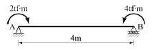
- 0.5tf(↓)
- 2.0tf(↓)
- 0.5tf(↑)
- 2.0tf(↑)
(정답률: 62%)
18. 다음 그림의 트러스에서 DF의 부재력은?
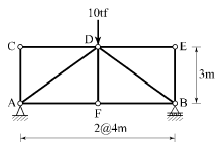
- 0tf
- 2tf
- 5tf
- 10tf
(정답률: 64%)
19. 아래의 표에서 설명하는 부정정 구조물의 해법은?
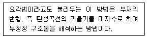
- 모멘트 분배법
- 최소일의 방법
- 변위일치법
- 처짐각법
(정답률: 60%)
20. 그림(A)와 같은 장주가 10tf 의 하중에 견딜 수 있다면 (B)의 장주가 견딜 수 있는 하중의 크기는? (단, 기둥은 등질, 등단면 이다.)
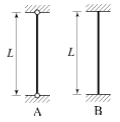
- 10tf
- 20tf
- 30tf
- 40tf
(정답률: 70%)
2과목: 측량학
21. 곡선부에서 차량의 뒷바퀴가 앞바퀴보다 안쪽으로 주행하는 현상을 보완하기 위해 설치하는 것은?
- 길어깨(shoulder)
- 확폭(slack)
- 편경사(cant)
- 차폭(width)
(정답률: 72%)
22. 깊이가 10m인 하천의 평균유속을 구하기 위해 유속측량을 하여 다음의 결과를 얻었다. 3점법에 의한 평균유속은? (단, Vm : 수면에서부터 수심의 m인 곳의 유속)
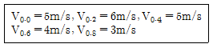
- 4.17m/s
- 4.25m/s
- 4.75m/s
- 4.83m/s
(정답률: 65%)
23. 클로소이드 매개변수(Parameter) A가 커질 경우에 대한 설명으로 옳은 것은?
- 자동차의 고속 주행에 유리하다.
- 접선각()이 비례하여 커진다.
- 곡선반지름이 작아진다.
- 곡선이 급커브가 된다.
(정답률: 60%)
24. 어느 지역의 측량 결과가 그림과 같다면 이 지역의 전체 토량은? (단, 각 구역의 크기는 같다.)
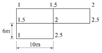
- 200m3
- 253m3
- 315m3
- 353m3
(정답률: 69%)
25. 건설공사 및 도시계획 등의 일반측량에서는 변장 2.5km 이상의 삼각측량을 별도로 실시하지 않고 국가기본삼각점의 성과를 이용하는 것이 좋은 이유로 가장 거리가 먼 것은?
- 정확도의 확보
- 측량 경비의 절감
- 측량 성과의 기준 통일
- 측량시간의 예측 가능
(정답률: 56%)
26. 평판측량 방법 중 기지점에 평판을 세워 미지점에 대한 방향선만을 그어 미지점의 위치를 결정할 수 있는 방법은?
- 전진법
- 방사법
- 승강법
- 교회법
(정답률: 53%)
27. 지구전체를 경도 6°씩 60개의 횡대로 나누고, 위도 8°씩 20개(남위 80°~북위 80°)의 횡대로 나타내는 좌표계는?
- UPS 좌표계
- 평면직각 좌표계
- UTM 좌표계
- WGS 84 좌표계
(정답률: 66%)
28. 종중복도가 60%인 단 촬영경로로 촬영한 사진의 지상 유효면적은? (단, 촬영고도 3,000m, 초점거리 150mm, 사진크기 210mm×210mm)
- 15.089 km2
- 10.584 km2
- 7.⑤6 km2
- 5.889 km2
(정답률: 43%)
29. 촬영고도 6,000m에서 촬영한 항공사진에서 주점기선 길이가 10cm이고, 굴뚝의 시차차가 1.5mm 이었다면 이 굴뚝의 높이는?
- 80m
- 90m
- 100m
- 110m
(정답률: 55%)
30. 직각좌표 상에서 각 점의 (x, y)좌표가 A(-4, 0), B(-8, 6), C(9, 8), D(4, 0)인 4점으로 둘러싸인 다각형의 면적은? (단, 좌표의 단위는 m 이다.)
- 87m2
- 100m2
- 174m2
- 192m2
(정답률: 43%)
31. 완화곡선에 대한 설명 중 옳지 않은 것은?
- 완화곡선의 접선은 시점에서 원호에 종점에서 직선에 접한다.
- 곡선의 반지름은 완화곡선의 시점에서 무한대, 종점에서 원곡선의 반지름으로 된다.
- 완화곡선에 연한 곡선반경의 감소율은 캔트의 증가율과 같다.
- 종점의 캔트는 원곡선의 캔트와 같다.
(정답률: 48%)
32. 1 : 25000 지형도 상에서 산정에서 산자락의 어느지점까지의 수평거리를 측정하니 48mm 이었다. 산정의 표고는 492m, 측정 지점의 표고는 12m일 때 두 지점간의 경사는?
- 1/2.5
- 1/4
- 1/2.9
- 1/10
(정답률: 42%)
33. 그림과 같이 0점에서 같은 정확도로 각을 관측하여 오차를 계산한 결과 x3-(x1+x2)=-36″의 식을 얻었을 때 관측값 x1, x2, x3에 대한 보정값 V1, V2,V3는?
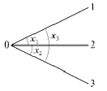
- V1=-9″, V2=-9″, V3=+18″
- V1-12″, V2=-12″, V3=+12″
- V1=+9″, V2=+9″, V3=-18″
- V1=+12″, V2=+12″, V3=-12″
(정답률: 41%)
34. 갑, 을 두 사람이 A, B 두 점간의 고저차를 구하기 위하여 서로 다른 표척으로 왕복측량한 결과가 갑은 38.994m±0.008m, 을은 39.003m±0.004m일 때, 두 점간 고저차의 최확값은?
- 38.995m
- 38.999m
- 39.001m
- 39.003m
(정답률: 56%)
35. 그림과 같이 원곡선을 설치하고자 할 때 교점(P)에 장애물이 있어 ∠ACD=150°, ∠CDB=90°및 CD의 거리 400m를 관측하였다. C점으로부터 곡선 시점 A까지의 거리는? (단, 곡선의 반지름은 500m로 한다.)
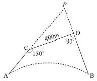
- 404.15m
- 425.88m
- 453.15m
- 461.88m
(정답률: 40%)
36. 수준측량에서 전시와 후시의 시준거리를 같게 함으로써 소거할 수 있는 오차는?
- 시준축이 기포관축과 평행하지 않기 때문에 발생하는 오차
- 표척을 연직방향으로 세우지 않아 발생하는 오차
- 표척 눈금의 오독으로 발생하는 오차
- 시차에 의해 발생하는 오차
(정답률: 60%)
37. 등고선의 성질에 대한 설명으로 옳은 것은?
- 도면 내에서 등고선이 폐합되는 경우 동굴이나 절벽을 나타낸다.
- 동일 경사에서의 등고선 간의 간격은 높은 곳에서 좁아지고 낮은 곳에서는 넓어진다.
- 등고선은 능선 또는 계곡선과 직각으로 만난다.
- 높이가 다른 두 등고선은 산정이나 분지를 제외하고는 교차하지 않는다
(정답률: 45%)
38. A점으로부터 폐합 다각측량을 실시하여 A점으로 되돌아 왔을 때 위거와 경거의 오차는 각각 20cm, 25cm이었다. 모든 측선 길이의 합이 832.12m이라 할 때 다각측량의 폐합비는?
- 약 1/2200
- 약 1/2600
- 약 1/3300
- 약 1/4200
(정답률: 57%)
39. 3km의 거리를 30m의 줄자로 측정하였을 때 1회 측정의 부정오차가 ±4mm이었다면 전체 거리에 대한 부정오차는?
- ±13mm
- ±40mm
- ±130mm
- ±400mm
(정답률: 55%)
40. 그림과 같은 단열삼각망의 조정각이 α1=40°, β1=60°, α2=50°, β2=30°, γ1=100°일 때,
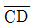
의 길이는? (단,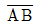
기선 길이 600m 이다.)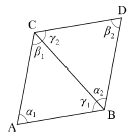
- 323.4m
- 400.7m
- 568.6m
- 682.3m
(정답률: 57%)
3과목: 수리학
41. 정수압의 성질에 대한 설명으로 옳지 않은 것은?
- 정수압은 작용하는 면에 수직으로 작용한다.
- 정수내의 1점에 있어서 수압의 크기는 모든 방향에 대하여 동일하다.
- 정수압의 크기는 수두에 비례한다.
- 같은 깊이의 정수압 크기는 모든 액체에서 동일하다.
(정답률: 49%)
42. 밑면이 7.5m×3m이고 깊이가 4m인 빈 상자의 무게가 4×105N이다. 이 상자를 물에 띄웠을 때 수면 아래로 잠기는 깊이는?
- 3.54m
- 2.32m
- 1.81m
- 0.75m
(정답률: 40%)
43. Darcy의 법칙을 지하수에 적용시킬 때 다음 어느 경우가 잘 일치되는가?
- 층류인 경우
- 난류인 경우
- 상류인 경우
- 사류인 경우
(정답률: 66%)
44. 에너지선에 대한 설명으로 옳은 것은?
- 유체의 흐름방향을 결정한다.
- 이상유체 흐름에서는 수평기준면과 평행한다.
- 유량이 일정한 흐름에서는 동수경사선과 평행하다.
- 유선상의 각 점에서의 압력수두와 위치수두의 합을 연결한 선이다.
(정답률: 46%)
45. 개수로의 설계와 수공 구조물의 설계에 주로 적용되는 수리학적 상사법칙은?
- Reynolds 상사법칙
- Froude 상사법칙
- Weber 상사법칙
- Mach 상사법칙
(정답률: 56%)
46. U자관에서 어떤 액체 15cm 높이와 수은 5cm의 높이가 평형을 이루고 있다면 이 액체의 비중은? (단, 수은의 비중은 13.6 이다.)
- 3.45
- 5.43
- 5.34
- 4.53
(정답률: 54%)
47. 관수로에서 Reynolds 수가 300 일 때 추정할 수 있는 흐름의 상태는?
- 상류
- 사류
- 층류
- 난류
(정답률: 64%)
48. 수로 폭 4m, 수심 1.5m인 직사각형 단면 수로에 유량 24m3/s가 흐를 때, 후르드수(Froude number)와 흐름의 상태는?
- 1.04, 상류
- 1.04, 사류
- 0.74, 상류
- 0.74, 사류
(정답률: 58%)
49. 긴 관로의 유량조절 밸브를 갑자기 폐쇄시킬 때, 관로 내의 물의 질량과 운동량 때문에 정상적인 동수압보다 몇 배의 큰 압력 상승이 일어나는 현상은?
- 공동현상
- 도수현상
- 수격작용
- 배수현상
(정답률: 68%)
50. 직사각형 단면 개수로의 수리학적으로 유리한 형상의 단면에서 수로 수심이 1.5m 이었다면 이 수로의 경심은?
- 0.75m
- 1.0m
- 2.25m
- 3.0m
(정답률: 54%)
51. 직사각형 단면의 개수로에서 비에너지의 최소값이 Emin=1.5m 이라면 단위 폭 당의 유량은?
- 1.75m3/s
- 2.73m3/s
- 3.13m3/s
- 4.25m3/s
(정답률: 33%)
52. 유량 Q, 유속 V, 단면적 A, 도심거리 hG라 할 때 충력치(M)의 값은? (단, 충력치는 비력이라고도 하며, η : 운동량 보정계수, g : 중력가속도, W : 물의 중량, ω: 물의 단위중량)
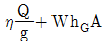
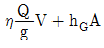
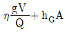
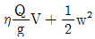
(정답률: 51%)
53. 그림과 같은 오리피스를 통과하는 유량은? (단, 오리피스 단면적 A=0.2m2, 손실계수 C=0.78 이다.)
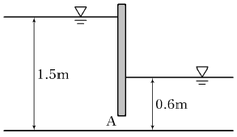
- 0.36m3/s
- 0.46m3/s
- 0.56m3/s
- 0.66m3/s
(정답률: 46%)
54. 동점성계수인 v를 나타내는 단위로 옳은 것은?
- Poise
- mega
- Stokes
- Gal
(정답률: 59%)
55. 관수로 내의 흐름을 지배하는 주된 힘은?
- 인력
- 중력
- 자기력
- 점성력
(정답률: 64%)
56. 지하수의 흐름에 대한 Darcy의 법칙은? (단, v : 지하수의 유속, k : 투수계수, △h : 길이 △ℓ에 대한 손실수두)
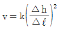
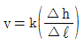
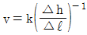
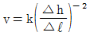
(정답률: 57%)
57. 수축단면에 관한 설명으로 옳은 것은?
- 오리피스의 유출수맥에서 발생한다.
- 상류에서 사류로 변화할 때 발생한다.
- 사류에서 상류로 변화할 때 발생한다.
- 수축단면에서의 유속을 오리피스의 평균유속이라 한다.
(정답률: 41%)
58. 그림과 같이 흐름의 단면을 A1에서 A2로 급히 확대할 경우의 손실수두(hs)를 나타내는 식은?
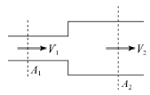
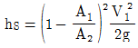
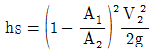
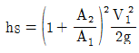
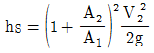
(정답률: 42%)
59. 안지름 15cm의 관에 10℃의 물이 유속 3.2m/s로 흐르고 있을 때 흐름의 상태는? (단, 10℃ 물의 동점성계수(v)=0.0131cm3/s)
- 층류
- 한계류
- 난류
- 부정류
(정답률: 46%)
60. 지름이 변하면서 위치도 변하는 원형 관로에 1.0m3/s의 유량이 흐르고 있다. 지름이 1.0m인 구간에서는 압력이 34.3kPa(0.35kg/cm2)이라면, 그 보다 2m 더 높은 곳에 위치한 지름 0.7m인 구간의 압력은? (단 마찰 및 미소손실은 무시한다.)
- 11.8kPa
- 14.7kPa
- 17.6kPa
- 19.6kPa
(정답률: 27%)
4과목: 철근콘크리트 및 강구조
61. 뒷부벽식 옹벽을 설계할 때 뒷부벽에 대한 설명으로 옳은 것은?
- T형보로 설계하여야 한다.
- 캔틸레버보로 설계하여야 한다.
- 직사각형보로 설계하여야 한다.
- 3변 지지된 2방향 슬래브로 설계하여야 한다.
(정답률: 70%)
62. 슬래브의 설계에서 직접설계법을 사용하고자 할 때 제한사항으로 틀린 것은?
- 각 방향으로 3경간 이상 연속되어야 한다.
- 슬래브판들은 단변 경간에 대한 장변 경간의 비가 2이하인 직사각형이어야 한다.
- 연속한 기둥 중심선을 기준으로 기둥의 어긋남은 그 방향 경간의 10% 이하이여야 한다.
- 모든 하중은 모멘트하중으로서 슬래브판 전체에 등분포되어야 하며, 활하중은 고정하중의 1/2 이상이어야 한다.
(정답률: 45%)
63. 다음 그림에서 주철근의 배근이 잘못된 것은?
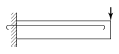
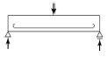
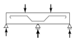
(정답률: 46%)
64. 그림과 같은 맞대기 용접이음의 유효길이는 얼마인가?
- 150mm
- 300mm
- 400mm
- 600mm
(정답률: 64%)
65. 철근콘크리트 구조물의 강도설계법에서 사용되는 강도감소계수에 대한 다음 설명 중 틀린 것은?
- 인장지배 단면에 대한 강도감소계수는 0.85이다.
- 압축지배 단면 중 나선철근으로 보강된 철근콘크리트 부재의 강도감소계수는 0.65이다.
- 전단력에 대한 강도감소계수는 0.75이다.
- 무근콘크리트의 휨모멘트에 대한 강도감소계수는 0.55이다.
(정답률: 55%)
66. 다음 중 극한하중 상태에서 급격한 취성파괴 대신 연성파괴를 나타내는 보는?
- 과소철근보
- 과다철근보
- 균형철근보
- 과소철근보, 균형철근보
(정답률: 43%)
67. 깊은 보(deep beam)에 대한 설명으로 옳은 것은?
- 순경간(ln)이 부재 깊이의 3배 이하이거나 하중이 받침부로부터 부재 깊이의 0.5배 거리 이내에 작용하는보
- 순경간(ln)이 부재 깊이의 4배 이하이거나 하중이 받침으로부터 부재 깊이의 2배 거리 이내에 작용하는 보
- 순경간(ln)이 부재 깊이의 5배 이하이거나 하중이 받침으로부터 부재 깊이의 4배 거리 이내에 작용하는 보
- 순경간(ln)이 부재 깊이의 6배 이하이거나 하중이 받침으로부터 부재 깊이의 5배 거리 이내에 작용하는 보
(정답률: 61%)
68. 철근콘크리트의 성립요건에 대한 설명으로 틀린 것은?
- 철근과 콘크리트의 부착강도가 크다.
- 압축은 콘크리트가 인장은 철근이 부담한다.
- 부착면에서 철근과 콘크리트의 변형률은 같다.
- 철근의 열팽창계수는 콘크리트의 열팽창계수보다 매우 크다.
(정답률: 56%)
69. D13철근을 U형 스터럽으로 가공하여 350mm 간격으로 부재축에 직각이 되게 설치한 전단 철근의 강도 Vs는? (단, fy=400MPa , d=600mm , D-13철근의 단면적은 127mm2)
- 87.1kN
- 125.3kN
- 174.2kN
- 204.7kN
(정답률: 51%)
70. 판형에서 보강재(stiffener)의 사용목적은?
- 보 전체의 비틀림에 대한 강도를 크게 하기 위함이다.
- 복부판의 전단에 대한 강도를 높이기 위함이다.
- flange angle의 간격을 넓게 하기 위함이다.
- 복부판의 좌굴을 방지하기 위함이다.
(정답률: 57%)
71. 철근콘크리트 부재의 철근의 간격제한에 대한 일반적인 설명으로 틀린 것은?
- 나선철근 또는 띠철근이 배근된 압축부재에서 축방향 철근의 순간격은 40mm 이상, 또한 철근 공칭 지름의 1.5배 이상으로 하여야 한다.
- 벽체, 또는 슬래브에서 휨 주철근의 간격은 벽체나 슬래브 두께의 3배 이하로 하여야 하고, 또한 450mm 이하로 하여야 한다.
- 상단과 하단에 2단 이상으로 배근된 경우 상하 철근은 동일 연직면내에 배치되어야 하고, 이 때 상하 철근의 순간격은 25mm 이상으로 하여야 한다.
- 동일 평면에서 평행한 철근 사이의 수평 순간격은 50mm 이상, 또한 철근의 공칭지름 이상으로 하여야 한다.
(정답률: 39%)
72. 강도설계법에 의해서 전단철근을 사용하지 않고 계수하중에 의한 전단력 40kN을 지지할 수 있는 직사각형보의 최소 단면적(bω×d)은 얼마인가? (단, fck=28MPa )
- 102,143mm2
- 112,512mm2
- 120,949mm2
- 134,242mm2
(정답률: 42%)
73. 그림과 같은 복철근 직사각형 보 단면이 압축부에 3-D22(As′=1,161mm2)의 철근과 인장부에 6-D32(As=4,765mm2)의 철근을 갖고 있을 때의 등가 압축응력의 깊이(a)는? (단, fck=28MPa , fy=400MPa 이다.)
- 151.43mm
- 159.25mm
- 164.72mm
- 178.56mm
(정답률: 61%)
74. 강도설계법에서 휨모멘트와 축력을 동시에 받는 부재의 콘크리트 압축연단의 극한변형률은 얼마로 가정하는가?
- 0.001
- 0.002
- 0.003
- 0.004
(정답률: 67%)
75. 다음 사항 중 프리스트레스트 콘크리트의 장점이 아닌 것은?
- 구조물의 자중이 가볍고 복원성이 우수하다.
- 철근콘크리트에 비하여 강성이 크고 진동이 적다.
- 부재에 확실한 강도와 안전율을 갖게 할 수 있다.
- 설계하중하에서는 균열이 생기지 않으므로 내구성이 크다.
(정답률: 47%)
76. PS강재를 긴장할 때 강재의 인장응력을 다음 어느값을 초과하면 안 되는가? (단, fpu : 긴장재의 설계기준인장강도, fpy : 긴장재의 설계기준항복강도)
- 0.80fpu 또는 0.82fpy 중 작은 값
- 0.80fpu 또는 0.94fpy 중 작은 값
- 0.74fpu 또는 0.82fpy 중 작은 값
- 0.74fpu 또는 0.94fpy 중 작은 값
(정답률: 54%)
77. 슬래브 중심간 거리 1.8m, 플랜지 두께 100mm T형 단면 복부 폭 350mm, 지간 10m인 대칭 T형 단면 보의 플랜지 유효폭은 얼마인가?
- 1.65m
- 1.8m
- 2.2m
- 2.5m
(정답률: 57%)
78. 인장 이형철근의 정착길이는 기본정착길이(ldb)에 보정계수를 곱한다. 상부수평 철근의 보정계수(α)는?
- 1.3
- 1.0
- 0.8
- 0.75
(정답률: 54%)
79. 휨부재에서 fck=28MPa, fy=400MPa일 때 인장철근 D29(공칭지름 28.6mm, 공칭단면적 642mm2)의 기본정착 길이(ldb)는 약 얼마인가?
- 1,200mm
- 1,250mm
- 1,300mm
- 1,350mm
(정답률: 60%)
80. 단철근 직사각형보에서 fy=400MPa, fck=24MPa 일 때, 강도 설계법에 의한 균형철근비는?
- 0.0187
- 0.0214
- 0.0260
- 0.0321
(정답률: 61%)
5과목: 토질 및 기초
81. 흙의 분류 중에서 유기질이 가장 많은 흙은?
- CH
- CL
- MH
- Pt
(정답률: 54%)
82. 어떤 점토시료의 압밀시험에서 시료의 두께가 20cm라고 할 때, 압밀도 50%에 도달할 때까지의 시간을 구하면? (단, 시료의 압밀계수는 Cv=2.3×10-3cm2/sec 이고 양면배수조건이다.)
- 10.24시간
- 5.12시간
- 2.38시간
- 1.19시간
(정답률: 44%)
83. 표준관입시험(S.P.T) 결과 N치가 25이었고, 그때 채취한 교란시료로 입도시험을 한 결과 입자가 모나고, 입도 분포가 불량할 때 Dunham공식에 의해서 구한 내부 마찰각은?
- 약 32°
- 약 37°
- 약 40°
- 약 42°
(정답률: 51%)
84. 사면안정 해석법 중 절편법에 대한 설명으로 옳지 않은 것은?
- 절편의 바닥면은 직선이라고 가정한다.
- 일반적으로 예상 활동파괴면을 원호라고 가정한다.
- 흙 속의 간극수압이 존재하는 경우에도 적용이 가능하다.
- 지층이 여러 개의 층으로 구성되어 있는 경우 적용이 불가능하다.
(정답률: 45%)
85. 아래 그림과 같은 지반의 점토 중앙 단면에 작용하는 유효응력은?
- 3.06t/m2
- 3.27t/m2
- 3.53t/m2
- 3.71t/m2
(정답률: 47%)
86. 연약지반 개량공법 중에서 일시적인 공법에 속하는 것은?
- Sand drain 공법
- 치환 공법
- 약액주입 공법
- 동결 공법
(정답률: 48%)
87. 다음 토질 시험 중 도로의 포장 두께를 정하는 데 많이 사용되는 것은?
- 표준관입시험
- C.B.R 시험
- 다짐시험
- 삼축압축시험
(정답률: 61%)
88. 흙의 건조밀도가 1.55g/cm3, 비중이 2.65인 흙의 간극비는?
- 0.59
- 0.64
- 0.71
- 0.78
(정답률: 44%)
89. 예민비가 큰 점토란 다음 중 어떤 것을 의미하는가?
- 점토를 교란시켰을 때 수축비가 큰 시료
- 점토를 교란시켰을 때 수축비가 적은 시료
- 점토를 교란시켰을 때 강도가 증가하는 시료
- 점토를 교란시켰을 때 강도가 많이 감소하는 시료
(정답률: 62%)
90. 흙속의 물이 얼어서 빙층(ice lens)이 형성되기 때문에 지표면이 떠오르는 현상은?
- 연화현상
- 동상현상
- 분사현상
- 다이러턴시(Dilatancy)
(정답률: 59%)
91. 흙의 단위무게가 1.60t/m3, 점착력 0.32kg/cm2, 내부마찰각 30°일 때 이 토층을 연직으로 절취할 수 있는 깊이는 얼마인가?
- 13.86m
- 12.54m
- 10.32m
- 9.76m
(정답률: 30%)
92. 3.0×3.6m인 직사각형 기초의 저면에 0.8m 및 1.0m간격으로 지름 30cm, 길이 12m인 말뚝 9개를 무리말뚝으로 배치하였다. 말뚝 1개의 허용지지력을 25ton으로 보았을 때 이 무리말뚝 기초 전체의 허용지지력을 구하면? (단, 무리말뚝의 효율(E)은 0.543이다.)
- 122.2ton
- 146.6ton
- 184ton
- 225ton
(정답률: 41%)
93. 채취된 시료의 교란정도는 면적비를 계산하여 통상 면적비가 몇 % 이하이면 잉여토의 혼입이 불가능한 것으로 보고 불교란 시료로 간주하는가?
- 5%
- 7%
- 10%
- 15%
(정답률: 51%)
94. 건조한 흙의 직접전단시험 결과 수직응력이 4kg/cm2일 때 전단저항은 3kg/cm2이고 점착력은0.5kg/cm2이었다. 이 흙의 내부마찰각은?
- 30.2°
- 32°
- 36.8°
- 41.2°
(정답률: 57%)
95. 다음 중 흙의 전단강도를 감소시키는 요인이 아닌 것은?
- 간극수압의 증가
- 수분증가에 따른 점토의 팽창
- 수축 팽창 등으로 인하여 생긴 미세한 균열
- 함수비 감소에 따른 흙의 단위중량 감소
(정답률: 45%)
96. 비중이 2.50, 함수비 40%인 어떤 포화토의 한계동수경사를 구하면?
- 0.75
- 0.55
- 0.50
- 0.10
(정답률: 56%)
97. 흙을 다질 때 그 효과에 대한 설명으로 틀린 것은?
- 흙의 역학적 강도와 지지력이 증가한다.
- 압축성이 작아진다.
- 흡수성이 증가한다.
- 투수성이 감소한다.
(정답률: 44%)
98. 어떤 모래층에서 수두가 3m일 때 한계동수경사가 1.0이었다. 모래층의 두께가 최소얼마를 초과하면 분사현상이 일어나지 않겠는가?
- 1.5m
- 3.0m
- 4.5m
- 6.0m
(정답률: 57%)
99. 점성토 지반의 성토 및 굴착시 발생하는 Heaving 방지대책으로 틀린 것은?
- 지반개량을 한다.
- 표토를 제거하여 하중을 적게 한다.
- 널말뚝의 근입장을 짧게 한다.
- Trench cut 및 부분 굴착을 한다
(정답률: 50%)
100. Sand drain 공법의 주된 목적은?
- 압밀침하를 촉진시키는 것이다.
- 투수계수를 감소시키는 것이다.
- 간극수압을 증가시키는 것이다.
- 지하수위를 상승시키는 것이다.
(정답률: 50%)
6과목: 상하수도공학
101. 하수도의 관거시설 중 역사이펀에 관한 설명으로 틀린 것은?
- 역사이펀실에는 수문설비 및 이토실을 설치한다.
- 역사이펀 관거는 일반적으로 복수로 한다.
- 역사이펀의 양측에 수직으로 역사이펀실을 설치한다.
- 역사이펀 관거내의 유속은 상류측 관거 내의 유속보다 작게 한다.
(정답률: 48%)
102. 상수도의 정수처리 중 맛 냄새가 있는 경우에 이를 제거하기 위한 방법이 아닌 것은?
- 불소주입
- 오존처리
- 염소처리
- 입상 활성탄처리
(정답률: 48%)
103. 강우강도 , 유역면적 2km2, 유입시간 5분, 유출계수 0.7, 하수관내 유속 1m/s일 때 관길이 600m인 하수관에 유출되는 우수량은?
- 27.2m3/s
- 54.4m3/s
- 272.2m3/s
- 544.4m3/s
(정답률: 49%)
104. 배수관을 망상(그물모양)으로 배치하는 방식의 특징이 아닌 것은?
- 고장의 경우 단수의 우려가 적다.
- 관내의 물이 정체하지 않는다.
- 관로해석이 편리하고 정확하다.
- 수압분포가 균등하고 화재시에 유리하다.
(정답률: 57%)
1⑤. 수도 계획의 기본적 사항에 대한 설명으로 틀린 것은?
- 하수도계획의 목표년도는 원칙적으로 10년으로 한다.
- 하수의 배제방식에는 분류식과 합류식이 있으며, 지역특성과 방류수역의 여건 등을 고려하여 결정한다.
- 하수도의 계획구역은 처리구역과 배수구역으로 구분하여 고려사항을 충분히 검토하여 결정한다.
- 하수도계획은 구상, 조사, 예측, 시설계획 등의 절차로 수립한다.
(정답률: 65%)
106. 수분 98%인 슬러지 30m3을 농축하여 수분 94%로 했을 때의 슬러지량은?
- 10m3
- 12m3
- 15m3
- 18m3
(정답률: 38%)
107. 펌프를 선택할 때 고려해야 할 사항으로 가장 거리가 먼 것은?
- 양정
- 펌프의 특성
- 동력
- 펌프의 무게
(정답률: 64%)
108. 급속여과법과 비교할 때, 완속여과법의 특징으로 옳은 것은?
- 넓은 부지가 필요하며 시공비가 많이 든다.
- 모래층의 오염물질을 제거하기 위한 역세척이 반드시 필요하다.
- 약품사용과 동력 소비에 따른 유지관리비가 많이 든다.
- 여과를 할 때 손실수두가 크다.
(정답률: 48%)
109. 합류식에서 우천시 계획오수량은 원칙적으로 계획 시간 최대오수량의 몇 배 이상으로 하는가?
- 1.5배
- 2배
- 3배
- 4배
(정답률: 40%)
110. 송수시설에서 계획송수량의 기준이 되는 것은?
- 계획시간 평균급수량
- 계획1일 최대급수량
- 계획1일 평균급수량
- 계획시간 최대급수량
(정답률: 66%)
111. 하수처리장에서 하천에 방류되는 방류수가 BOD30mg/L, 유량 20,000m3/day이고, 방류되기 전 하천의 BOD와 유량이 3mg/L, 0.4m3/s일 때 방류수가 하천에 완전 혼합된다면 합류지점의 BOD 농도는?
- 약 13mg/L
- 약 23mg/L
- 약 30mg/L
- 약 33mg/L
(정답률: 33%)
112. 급수용 저수지의 유효저수량을 결정하기 위한 Ripple 곡선이다. 다음 중 저수지의 수위가 가장 높아지는 때는?
- O
- L
- M
- N
(정답률: 60%)
113. 그림은 사류펌프(Ns=850)의 표준특성곡선이다. 축동력을 나타내는 곡선은?
- Ⓐ
- Ⓑ
- Ⓒ
- Ⓓ
(정답률: 44%)
114. 하수도 관거의 최소 흙두께(매설깊이)의 원칙적인 기준은?
- 1.0m
- 1.5m
- 2.0m
- 2.5m
(정답률: 57%)
115. K2Cr2O7은 강력한 산화제로서 COD 측정에 이용된다. 수질 검사에서 K2Cr2O7의 소비량이 많다는 것이 의미하는 것은?
- 물의 경도가 높다.
- 부유물이 많다.
- 대장균이 많다.
- 유기물이 많다.
(정답률: 44%)
116. 활성슬러지법에서 MLSS가 의미하는 것은?
- 폐수 중의 고형물
- 방류수 중의 부유물질
- 폭기조 중의 부유물질
- 침전지 상등수 중의 부유물질
(정답률: 63%)
117. 상수도의 배수시설에 관한 설명으로 틀린 것은?
- 배수시설에는 배수지, 배수탑, 고가탱크 등이 있다.
- 배수탑과 고가탱크는 배수구역내 배수지를 설치할 적당한 높은 장소가 없을 때 설치 한다.
- 배수지의 유효수심은 3～6m 정도를 표준으로 하여야한다.
- 배수지의 유효용량은 배수구역의 계획1일 평균급수량의 6시간분을 표준으로 한다.
(정답률: 61%)
118. 원수를 음용이나 공업용 등 용도에 알맞게 처리하는 과정은?
- 취수
- 정수
- 도수
- 배수
(정답률: 52%)
119. 정수시설 중 응집지의 플록형성지에서 계획정수량에 대한 표준 플록형성시간(체류시간)은?
- 10～30분
- 20～40분
- 30～50분
- 1시간 이상
(정답률: 47%)
120. 하천수 취수시설 중 수위변화에 대응할 수 있고 수위에 따라 좋은 수질을 선택하여 취수할 수 있으며 최소 수심 2m 이상을 유지하여야 취수가 가능한 것은?
- 취수관거
- 취수문
- 집수정
- 취수탑
(정답률: 62%)